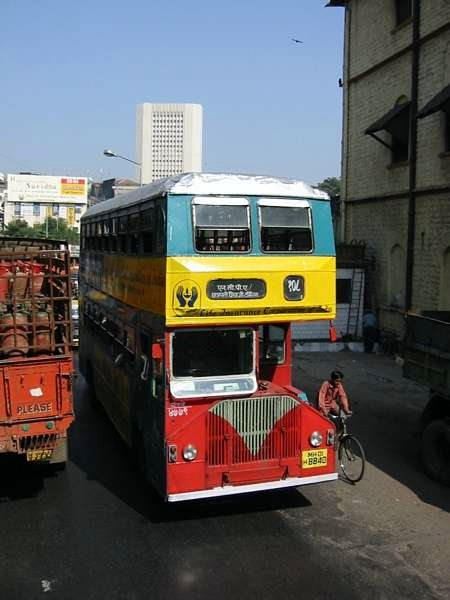
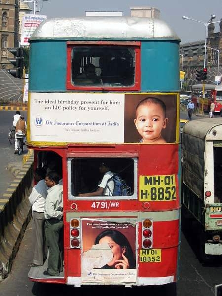
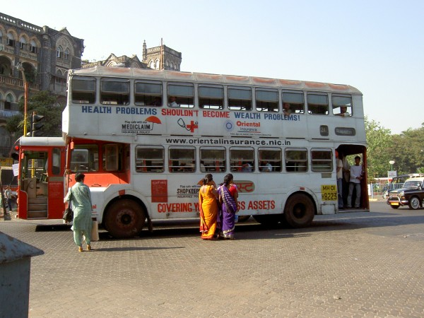
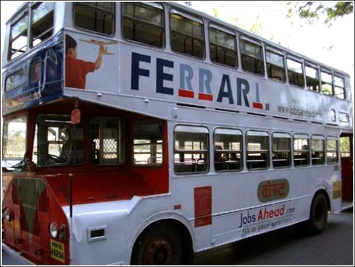
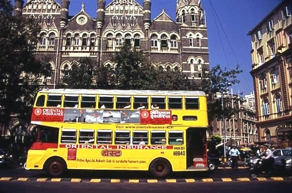
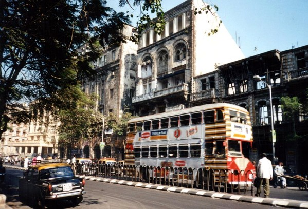
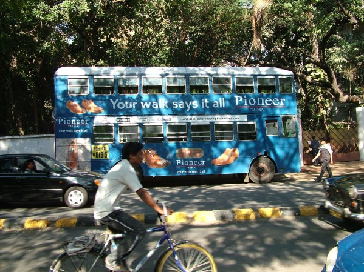
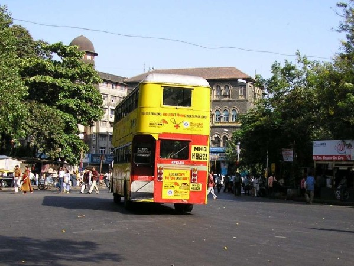
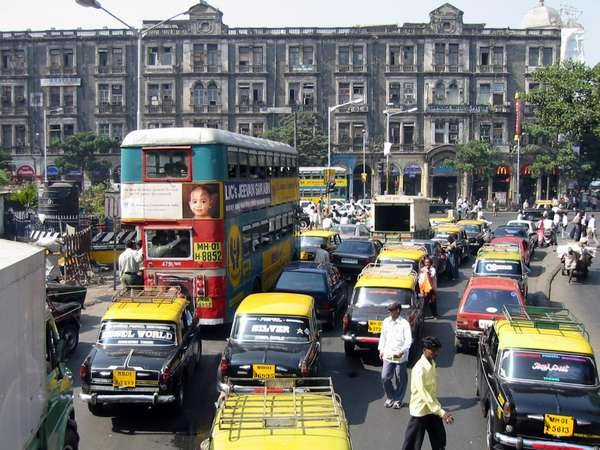
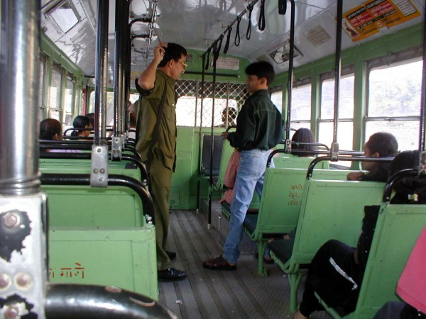

|
Ashok Leyland "Titan" ALPD1/1 印度神話
  在孟買行駛的Ashok雙層巴士，全是BEST(The Brihanmumbai Electric Supply & Transport)擁有。這是一家歷史悠久，在孟買提供電力及公共交通的大型企業，於1905年成立，已超過100年歷史。這些雙層巴士在孟買扮演著吃重角色，日常運作時可運載近200名乘客，可見這個開放式平台是何等堅固。 |

雙層巴士車身面積廣大，當然受到廣告客戶歡迎。在孟買可見穿著傳統服飾的婦女，與打扮時髦的年輕人。






Ashok雙層巴士的車箱。孟買的巴士服務仍然設有售票員倉票，是否有著一些6、70年代九龍巴士的味道?!

以上圖片鳴謝眾海外好友提供﹕Viveks、Sanjeev、Thomas Güther